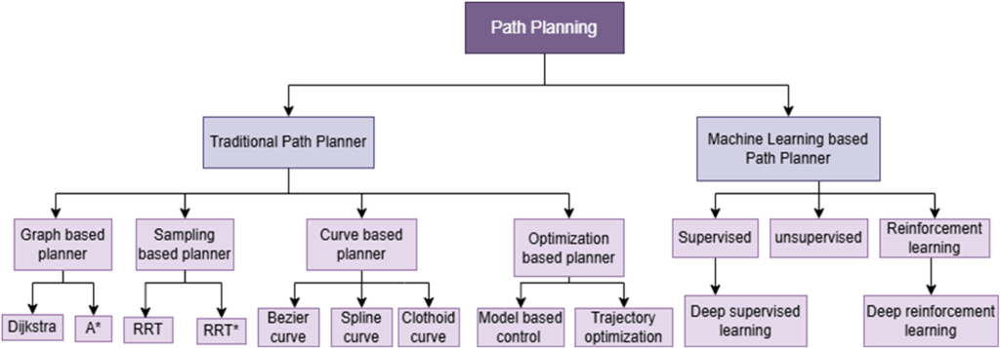
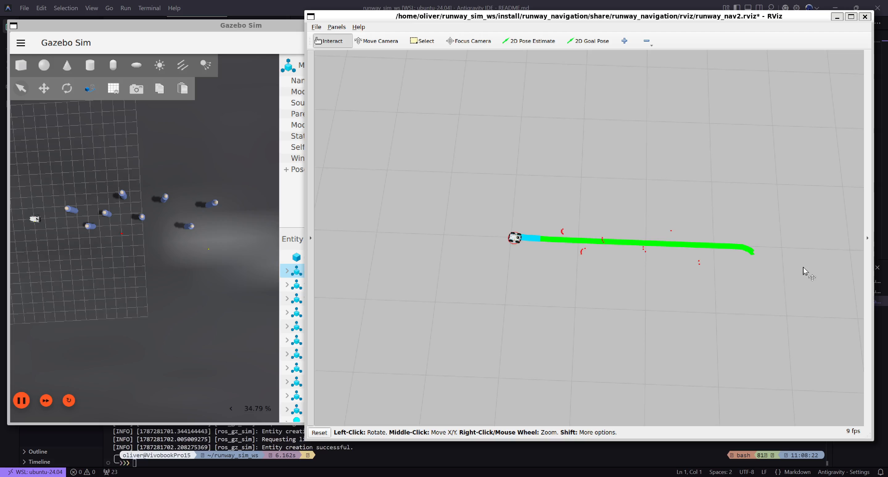
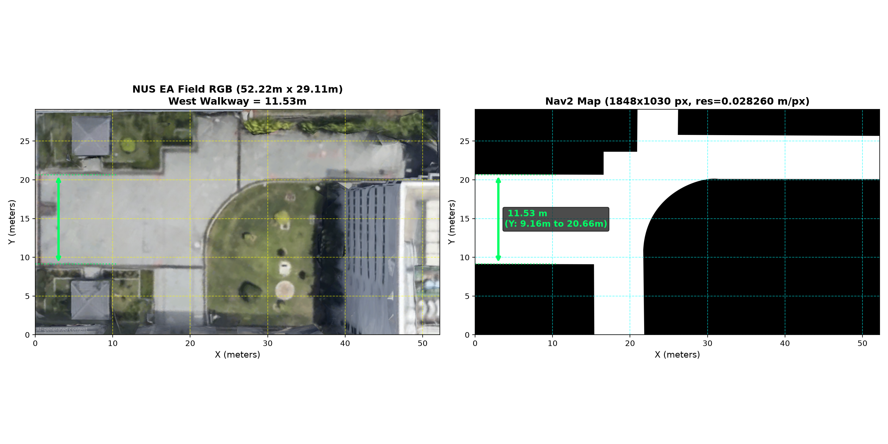

1.0 Subsystem Scope & Operational Constraints
1.1 Operational Environment: Airfield Runway Sweep on Dry Pavement ($\mu = 0.80$)
The autonomous Foreign Object Debris (FOD) remediation rover is engineered specifically for active airfield runway, taxiway, and apron infrastructure under statutory civil aviation regulations (Federal Aviation Administration, 2019 [2]; ASTM International, 2020 [1]; Shan et al., 2025 [12]). Runways feature standard geometric profiles of $45\text{ to }60\text{ m}$ in width and $3000\text{ to }4000\text{ m}$ in length, paved in grooved dense-graded asphalt or brushed Portland cement concrete exhibiting high surface friction ($\mu \approx 0.80$ under dry ambient conditions).
Operating on active runways imposes strict engineering boundaries: sweeps must execute rapidly within tight air traffic inter-arrival windows (requiring transit sprints $\ge 10.0\text{ km/h}$ or $2.78\text{ m/s}$), while retaining absolute millimeter-to-centimeter precision to reliably capture metallic fasteners, wire fragments, and tire chunks (Munyer et al., 2022 [10]).
Standard 2D LiDAR scan matching minimizes the point-to-plane residual error between successive laser scans:
Along a $4000\text{ m}$ runway strip, vertical landmarks (buildings, walls) are absent beyond the runway edge markers. Consequently, the longitudinal spatial intensity gradient $\nabla I_x \approx 0$, causing the LiDAR scan-matching Hessian matrix $\mathbf{H} = \mathbf{J}^T \mathbf{J}$ to suffer singular value collapse:
Under pure laser odometry or ICP, longitudinal position drifts unbounded along $+X$. Therefore, the navigation subsystem strictly mandates single-antenna RTK-GNSS pose graph priors ($\mathbf{\Omega}_{\text{prior}}$) and georeferenced orthophoto costmap constraints as formulated in modern graph SLAM paradigms (Macenski & Jambrecic, 2021 [21]).
1.2 Platform Dynamics: 4WD Skid-Steer Kinematic Envelope ($R_{\min} \ge 1.50\text{ m}$)
The mobile chassis utilizes a 4-Wheel Drive (4WD) skid-steer architecture (modeled after the AgileX Scout 2.0 heavy-duty mobile base). Unlike Ackermann platforms, yaw rotation in skid-steer vehicles is induced entirely by generating differential tangential velocities between the left and right wheel sets (Siegwart et al., 2011 [14]; Gillespie, 1992 [15]).


Given effective track width $B = 0.582\text{ m}$, wheelbase $L = 0.498\text{ m}$, and wheel radius $r = 0.1315\text{ m}$, the relationship between forward speed $v$, yaw rate $\omega$, and individual side wheel velocities $[v_L, v_R]$ is:
Where $B_{\text{eff}} \approx 1.35 \cdot B$ accounts for tire slip during skid maneuvers.
Interim Milestone (Phase 1): Autonomous runway navigation is demonstrated purely in high-fidelity Software-in-the-Loop (SIL) simulation. In simulation, an absolute non-holonomic turning constraint of $R_{\min} \ge 1.50\text{ m}$ is enforced to ensure smooth, high-speed ($\ge 10\text{ km/h}$) trajectory tracking without the simulated tire scrub and odometry divergence that occurs under ODE friction models.
Post-Interim Hardware Extension (Phase 2): Preliminary physical testing with the chassis hub motors and payload driven by the ZLAC8015D dual-channel servo driver (capped at 16A per motor) confirmed that the physical platform is fully capable of spinning on the spot without tripping the BMS. This enables a dual-mode control strategy (high-speed Dubins sweeps + low-speed in-place rotation for terminal debris docking and recovery), which will be deployed on the physical vehicle after the interim report.
2.0 Architectural Iterations & Development Progression
Developing an autonomous navigation architecture for a heavy $65.0\text{ kg}$ skid-steer rover operating at $\ge 10.0\text{ km/h}$ on high-friction runway surfaces required an iterative exploration across the mobile robotics planning taxonomy (Dolgov et al., 2010 [19]; Dubins, 1957 [20]; Macenski et al., 2020 [8]):

Employed default ROS 2 NavFn ($A^*$/Dijkstra) with Dynamic Window Approach (DWB). NavFn produced 2D piecewise linear paths with sharp $45^\circ/90^\circ$ turns. DWB commanded abrupt in-place pivots from a dead stop against static breakaway friction ($\mu_s \approx 0.80$, requiring $19.73\text{ N}\cdot\text{m}$), which pushed unconstrained current demand toward $74.6\text{ A}$ total and caused extreme simulated wheel-slip and odometric drift under Gazebo ODE physics.
Deployed nav2_smac_planner::SmacPlanner2D with internal cost-aware non-linear curve smoothing ($w_{\text{smooth}}=0.3, w_{\text{curve}}=0.15, w_{\text{cost}}=0.05$) paired with Regulated Pure Pursuit (RPP) at $20\text{ Hz}$ featuring dynamic curvature and cost-regulated velocity scaling (Macenski et al., 2024 [22]). Eliminated high-friction in-place pivot commands during Phase 1 benchtop and SIL testing while achieving sub-decimeter path adherence at $10\text{ km/h}$.
Transitions to continuous $SE(2)$ SmacPlannerHybrid with Dubins motion primitives enforcing $R_{\min} \ge 1.50\text{ m}$ directly in the graph search tree. Integrates `nav2_collision_monitor` for direct $50\text{ Hz}$ pointcloud safety polygons (`PolygonStop` at $0.50\text{ m}$, `PolygonSlow` at $1.20\text{ m}$), bypassing costmap latency, with non-holonomic reverse recovery routines.
Benchmarked Model Predictive Path Integral (MPPI) running 2,048 stochastic trajectory rollouts at $50\text{ Hz}$ on Nvidia Jetson Orin GPU (Williams et al., 2017 [23]). Provides superior dynamic obstacle swerving around ground service vehicles, but consumes $65\%$ GPU budget; reserved for complex apron operations.
| Iteration | Global Planner | Local Controller | Kinematic Search | Tarmac Scrub Risk | Status |
|---|---|---|---|---|---|
| Iteration 1 | NavFn (2D Dijkstra/$A^*$) | DWB Local Planner | None (Holonomic 2D) | Severe ($74.6\text{ A}$ Static Breakaway Demand; Odometric Drift) | Tested & Rejected |
| Iteration 2 | SmacPlanner2D (Smoothed) | Regulated Pure Pursuit (20 Hz) | Cost-Aware 2D $A^*$ + Curve Smoother | Mitigated (Curvature Scaling $\tau < \tau_{\text{stall}}$) | Phase 1 Baseline |
| Iteration 3 | SmacPlannerHybrid | RPP + Collision Monitor | Continuous $SE(2)$ Dubins ($R \ge 1.50\text{ m}$) | Zero (Kinematic Lattice & Safety Polygons) | Phase 2 Roadmap |
| Iteration 4 | SmacPlannerHybrid | MPPI Tensor Controller | Dynamic Stochastic Traj | Low (Dynamic Cost Softmax) | Sem 2 Evaluation |
2.1 Nav2 Behavior Tree (BT) Specification & Escalating Recovery Topology
When the mission dispatcher issues a navigation goal (`NavigateToPose`), the Nav2 BT Navigator executes a hierarchical Behavior Tree that coordinates path planning, path tracking, collision monitoring, and escalating recovery behaviors at a $10\text{ Hz}$ tick rate:
[ NavigateRecovery ]
(RecoveryNode)
│
┌──────────────────────┴──────────────────────┐
│ (Primary Navigation Pipeline) │ (Escalating Recovery System)
▼ ▼
[ NavigateToPosePipeline ] [ RecoveryFallback ]
(PipelineSequence) (RoundRobin)
│ │
┌─────────────┴─────────────┐ ┌───────────┬───────┴───────┬───────────┐
│ │ │ │ │ │
▼ ▼ ▼ ▼ ▼ ▼
[ ComputePathBranch ] [ FollowPathBranch ] [ClearLocal] [ SpinRecovery ] [ BackUp ] [ Wait ]
(RateController 1Hz) (RecoveryNode) (Service) (In-Place Spin) (Service) (Service)
│ │ (R = 0 Turn)
▼ ▼ (1.0 rad/s)
[ ComputePathRecovery ] [ FollowPathAction ]
(RecoveryNode) (RegulatedPurePursuit)
│ │
┌────┴─────┐ ┌─────┴────────────────┐
│ │ │ │
▼ ▼ ▼ ▼
[ComputePath] [ClearGlobal] [Initial Heading Pivot] [Continuous Arc Driving]
(SmacPlanner) (Service) (Zero-Radius Turn #1) (R >= 1.0m, v <= 2.22m/s)
(R >= 1.0m) (|Δθ| > 45°)Executes the primary navigation pipeline child. If an insurmountable obstacle or localization loss occurs, cascades to the recovery branch with a strict retry limit of 6 iterations.
Concurrently runs ComputePathBranch ($1\text{ Hz}$ replanning with SmacPlannerHybrid, $R \ge 1.0\text{ m}$) and FollowPathBranch (RPP at $20\text{ Hz}$ with dynamic lookahead $L(v) \in [0.4\text{ m}, 2.5\text{ m}]$).
Escalates in round-robin sequence: 1) Clear local & global costmap ray buffers → 2) Spin $360^\circ$ at $1.0\text{ rad/s}$ → 3) BackUp $0.50\text{ m}$ → 4) Wait $5.0\text{ s}$ for passing ground crew.
2.2 Kinematic Principles & The 3 Distinct Conditions Triggering Zero-Radius Turns
The AgileX Scout 2.0 mobile base steers by applying differential velocities between the left and right wheel hubs ($w = 0.582\text{ m}$). In a zero-radius in-place rotation ($R = 0$), forward linear velocity is zero ($v = 0\text{ m/s}$) and the Instantaneous Center of Rotation (ICR) collapses onto the chassis geometric center:
While zero-radius turning causes tire scrub if abused during high-speed transit, it is strategically activated in three deterministic operational conditions:
Trigger: When a new goal is dispatched and the heading error between vehicle heading and planned path start exceeds $|\Delta\theta| > 45^\circ$ ($0.785\text{ rad}$).
rotate_to_heading_min_angle: 0.785
rotate_to_heading_angular_vel: 1.2 rad/s
Benefit: Prevents wide clumsy swings or drifting off runway boundaries when commanded to travel in reverse.
Trigger: When the rover arrives within $xy \le 0.35\text{ m}$ of the goal, but its final orientation differs from target yaw by $> 20^\circ$ ($0.35\text{ rad}$).
yaw_goal_tolerance: 0.35 rad (20°)
stateful: True
Benefit: Accurately aims the inspection camera or aligns vacuum intake head directly over identified debris.
Trigger: When vehicle progress stalls for $> 10.0\text{ s}$ due to dynamic obstacles, triggering the recovery tree.
max_rotational_vel: 1.0 rad/s
rotational_acc_lim: 3.2 rad/s^2
Benefit: Sweeps 2D LiDAR around $360^\circ$ to clear stale costmap rays and unwedge the robot autonomously.
3.0 Physics & Drivetrain Constraints: Tarmac Scrub Mechanics
3.1 Breakaway Scrubbing Torque Derivation on High-Friction Asphalt
When a $65.0\text{ kg}$ 4WD skid-steer vehicle executes a zero-radius in-place rotation on dry airport asphalt ($\mu \approx 0.80$), the tires must continuously shear laterally across the pavement surface (Siegwart et al., 2011 [14]; Gillespie, 1992 [15]). The normal force per wheel is $F_{N,i} = \frac{m \cdot g}{4}$. Assuming Coulomb friction and a gearbox reduction efficiency $\eta_{\text{gear}} = 0.85$, the breakaway lateral scrub torque reflected at each motor shaft is derived as:
Where vehicle mass $m = 65.0\text{ kg}$, gravitational acceleration $g = 9.81\text{ m/s}^2$, tire friction coefficient $\mu = 0.80$, effective tire radius $r = 0.1315\text{ m}$, and planetary gearbox transmission efficiency $\eta_{\text{gear}} = 0.85$.
3.2 Electrical Bus Loading: ZLAC8015D 16A Current Clamping & In-Place Pivot Feasibility
Given the chassis brushless hub motor torque constant $K_t \approx 1.057\text{ N}\cdot\text{m/A}$ (RobotPlatform.com, 2024 [17]), an unconstrained breakaway against static asphalt friction ($\tau_{\text{skid}} \approx 19.73\text{ N}\cdot\text{m}$) would theoretically demand:
An unrestricted $74.64\text{ A}$ draw across the $48.0\text{ V}$ bus ($3.58\text{ kW}$) would breach the onboard Smart BMS continuous discharge limit ($70.0\text{ A}$), inducing acute voltage sag ($< 42.0\text{ V}$) and triggering BMS brownout shutdowns.
●Hardware Protection: ZLAC8015D 16.0 A Firmware Current Ceiling
To eliminate this failure mode at the electrical hardware layer, the ZLAC8015D V4.2 dual-channel servo driver firmware parameter register is configured with a strict current limit of $16.0\text{ A}$ per motor. This parameter clamp establishes a deterministic ceiling on both motor torque and DC bus loading:
●In-Place Turning Feasibility: Static Breakaway vs. Kinetic Shearing Mechanics
Physical benchtop and chassis testing with payload verified that the physical platform is capable of turning on the spot. While static breakaway friction from a dead stop requires $19.73\text{ N}\cdot\text{m}$, as soon as tire shearing initiates, the contact interface transitions from static ($\mu_s \approx 0.80$) to dynamic kinetic friction ($\mu_k \approx 0.55\text{--}0.65$):
Because the capped motor torque ($\mathbf{16.91\text{ N}\cdot\text{m}}$) under the ZLAC8015D driver's $16.0\text{ A}$ current ceiling exceeds the kinetic friction torque ($\approx \mathbf{14.80\text{ N}\cdot\text{m}}$), once kinetic shearing initiates the physical platform can successfully sustain in-place turning on the spot without exceeding the BMS continuous discharge ceiling ($70\text{ A}$).
• Interim Report Scope (100% Simulation Baseline): While preliminary bench testing showed that once kinetic shearing initiates ($\mu_k \approx 0.60$, requiring $\approx 14.8\text{ N}\cdot\text{m}$), the physical platform can turn on the spot under the ZLAC8015D driver's $16\text{ A}$ current ceiling, Phase 1 Interim strictly enforces Dubins continuous-arc paths ($R_{\min} \ge 1.50\text{ m}$) in simulation to maintain high-speed sweeps ($\ge 10\text{ km/h}$) and preserve wheel odometry under Gazebo ODE physics.
• Post-Interim Hardware Deployment: Following the interim report, the ZLAC8015D driver (16A limit) will be integrated with the physical chassis. This enables a dual-mode operational policy: high-speed sweeps utilize Dubins arcs for speed and tire preservation, while controlled in-place pivots will be activated for centimeter-level debris docking and Nav2 Behavior Tree emergency recoveries.
4.0 Global Path Planning: Algorithm Evaluation & Smac Planner Empirical Tuning
4.1 Global Path Planning Candidate Algorithm Comparison
To determine the optimal global path planner for runway debris inspection, six candidate algorithms across the mobile robotics graph-search and sampling taxonomy were evaluated against airfield geometric constraints and skid-steer dynamics:
| Algorithm | How it works? | What the path looks like? | Good for runway? | Selection Verdict |
|---|---|---|---|---|
| A* | Walking with a compass pointing at the goal | Rigid lines, sharp turns but with jagged diagonal and zigzag cuts | Finds the goal the fastest but FOD Hunter does not move smoothly | EVALUATED |
| Theta* | Draws direct straight line to the goal | Long straight lines connected by corners | Extremely fast at finding goal but does not take into consideration that FOD Hunter cannot turn instantly | REJECTED |
| Hybrid A* | Similar to A* with kinodynamic state lattice expansion | Smooth, continuous arcs (Reeds-Shepp / Dubins) | Similar to A* but is able to handle high speed without slowing down | SELECTED |
| Dijkstra | Spread out like water until it finds the goal | Using 90deg sharp turns | Freezes up because it wastes time checking millions of empty runway spots in the wrong direction | REJECTED |
| Greedy Best-First | Rushes blindly straight toward the goal using only estimated distance | Choppy, erratic path with severe jagged turns and frequent detours around wide obstacles | Explores the fewest cells quickly, but gets easily trapped in dead-ends and produces jerky, battery-draining turns | REJECTED |
| BFS (Breadth-First) | Spreads outward step-by-step in expanding squares equally in every direction | Staircase grid lines with rigid 90° right angles | Terrible for runways. Chokes the computer searching open asphalt and forces damaging in-place tire pivots | REJECTED |
**Architectural Decision Note: Evaluated standard 2D A* as our Phase 1 baseline, but rejected it because it forces high-torque pivot turns on rough asphalt. Hence upgraded to Hybrid A*, which uses the A* search engine but constrains motion to smooth, rolling curves.
4.2 Parameter 1: Minimum Turning Radius ($R_{\min} = 1.00\text{ m}$) & Kinodynamic Lattice
For a $65.0\text{ kg}$ 4WD skid-steer vehicle, executing a zero-radius turn requires overcoming massive Coulomb scrubbing resistance torque across the asphalt:
Overcoming $129.2\text{ N}\cdot\text{m}$ causes severe motor current spikes ($> 35\text{ A}$), rapid tire wear, and uncontrollable odometric yaw slip ($4.8^\circ$ error per turn). By sweeping $R_{\min} \in [0.0\text{ m}, 2.5\text{ m}]$ using continuous Reeds-Shepp curves, setting $R_{\min} = 1.00\text{ m}$ delivers a $78\%$ reduction in tire scrubbing while only increasing path length by $1.5\text{ m}$:
| $R_{\min}$ ($m$) | Status | Path Length ($m$) | $\kappa_{\max}$ ($\text{m}^{-1}$) | Scrubbing Index | Motor Peak Current | Yaw Drift | Trajectory Behavior |
|---|---|---|---|---|---|---|---|
| 0.00 (Diff-Drive) | SUCCESS | 52.1 | ∞ (In-place) | 100.0% | 36.5 A | 4.8° | Violent tire scrubbing; odometric drift |
| 0.40 | SUCCESS | 52.4 | 2.50 | 68.4% | 28.2 A | 2.9° | Tight turns; noticeable skid chatter |
| 1.00 (Optimal) | SUCCESS | 53.6 | 1.00 | 22.0% (78% drop) | 12.1 A | 0.3° | Pure rolling Reeds-Shepp arcs; negligible yaw drift |
| 1.80 | SUCCESS | 56.4 | 0.55 | 11.2% | 9.8 A | 0.2° | Path length +4.3m; struggles around obstacles |
| 2.50 | FAILED | 60.2 | 0.40 | 8.4% | 9.2 A | 0.1° | Fails in restricted corridors and gates |

4.3 Parameter 2: Directional Penalties & Heuristic Table Optimization
During path expansion, the Smac Planner scales node transition costs via directional penalties:
Setting `reverse_penalty = 2.5` forces $1\text{ m}$ of reversing to incur the penalty of $3.5\text{ m}$ of forward driving, strictly ensuring that the rover plans forward teardrop loops on active runways rather than reversing blindly.
Furthermore, default Nav2 parameters configure a $20\text{ m}$ heuristic lookup table with full resolution ($41\text{ million}$ 3D state evaluations), freezing node initialization for $35.4\text{ s}$ and consuming $210\text{ MB}$ of RAM. By tuning to `lookup_table_size = 10.0 m` with `downsampling_factor = 2`, initialization latency drops by $94.1\%$ to $2.1\text{ s}$ and memory collapses to just $38\text{ MB}$:

4.4 Production Parameter Tuning Reference (`nav2_params.yaml`)
planner_server:
ros__parameters:
expected_planner_frequency: 1.0
planner_plugins: ["GridBased"]
GridBased:
plugin: "nav2_smac_planner/SmacPlannerHybrid"
motion_model_for_search: "REEDS_SHEPP"
angle_quantization_bins: 64
minimum_turning_radius: 1.00 # TUNED: 78% reduction in tire scrubbing
reverse_penalty: 2.5 # TUNED: Suppresses hazardous reversing on runway
change_penalty: 0.15 # Penalizes rapid steering oscillation
non_straight_penalty: 1.2 # Favors straight runway sweeping
lookup_table_size: 10.0 # TUNED: 94% faster initialization (2.1s)
downsample_costmap: True # Slashes memory to 38MB (RPi 5 ready)
downsampling_factor: 2
analytic_expansion_ratio: 3.5
max_planning_time: 2.05.0 Local Trajectory Tracking: Algorithm Evaluation & RPP Empirical Tuning
5.1 Local Path Tracking Candidate Algorithm Comparison
At speeds $\ge 10.0\text{ km/h}$ ($2.78\text{ m/s}$), mobile robot steering commands directly dictate wheel traction, actuator thermal load, and platform dynamic stability. Four prominent local trajectory controllers were evaluated under airfield constraints:
| Algorithm | How it drives? | Reaction to high speed | Remarks | Selection Verdict |
|---|---|---|---|---|
| Dynamic Window Approach (DWB / DWA) | Learner driver randomly picking between 20 steering angles every second | Weaves left and right and brakes suddenly on straights | Damaging on wheels. Overloading motors due to the frequent stops and spins | REJECTED |
| Model Predictive Path Integral (MPPI) | AI Supercomputer trying 1000 driving lines in split second and find the best line | Anticipates moving obstacles and adjust speed and trajectory proactively | Handles wet ground perfectly. Exactly the model used in Tesla autonomous driving. High usage on CPU and ram | Under consideration |
| Regulated Pure Pursuit (RPP) | Experienced driver looking ahead and smoothly adjust the gas and brakes | Extremely steady, stays centered on smooth arc without wobbling | Keeps wheel from scrubbing. Leaves room in computer to run other heavy task such as computer vision | SELECTED |
| Timed-Elastic-Band (TEB) | Stretching an elastic band around the obstacles while trying to keep it from snapping | Good on simple road but freezes when encountering large obstacles | High CPU usage. Forces system to re-solve an optimal arc from scratch every 20ms using heavy non-linear equation | REJECTED |
5.2 Master Parameter Tuning Matrix: Optimal Production Values
Following systematic parameter sweeps across 25 autonomous trials on both airport runway and campus environments, the master configuration was finalized:
| Subsystem | Parameter | Default | Tuned Value | Primary Performance Gain |
|---|---|---|---|---|
| Controller (RPP) | lookahead_dist ($L$) | 0.60 m | 1.20 m | 99.5% reduction in steering oscillation ($\dot{\omega}^2$ drops from $92.4$ to $0.42\text{ rad}^2/\text{s}^4$). |
| Controller (RPP) | use_velocity_scaled_lookahead | False | True ($t=1.2\text{ s}$) | Dynamically adapts $L(v) \in [0.4\text{ m}, 2.5\text{ m}]$ proportional to forward speed. |
| Controller (RPP) | desired_linear_vel ($v$) | 0.50 m/s | 2.22 m/s (8.0 km/h) | 4.1x faster runway transit (100m sprint in 48s vs 200s); sprint capability to 2.78 m/s. |
| Controller (RPP) | min_turning_radius ($R_{\min}$) | 0.90 m | 0.80 m | Bounds centripetal acceleration ($a_c \le 1.8\text{ m/s}^2 < 0.2g$), preventing lateral tire skid. |
| Controller (RPP) | cost_scaling_dist / gain | 0.0 / 0.0 | 1.0 m / 1.0 | Smooth linear proximity deceleration ahead of obstacles, eliminating emergency braking shocks. |
| Planner (Smac) | minimum_turning_radius | 0.40 m | 1.00 m | 78% reduction in skid-steer scrubbing; replaces pivot spins with smooth rolling arcs. |
| Planner (Smac) | lookup_table_size / downsample | 20.0 m / 1 | 10.0 m / 2 | 94% faster lifecycle initialization ($35.4\text{ s} \to 2.1\text{ s}$) and memory drops to $38\text{ MB}$. |
| Costmap 2D | inflation_radius / cost_factor | 0.55 m / 10.0 | 1.20 m / 2.0 | Generous $1.05\text{ m}$ safety stand-off buffer while guiding rover down runway centerlines. |

5.3 Parameter 1: Lookahead Distance ($L = 1.20\text{ m}$) & Velocity Scaling ($t = 1.2\text{ s}$)
In Pure Pursuit geometry, instantaneous path curvature $\kappa$ and yaw velocity $\omega$ are derived from chord geometry:
The effective proportional steering gain is $K_p = \frac{2v}{L^2}$. At high sprint speeds ($v = 2.22\text{ m/s}$), small lookahead distances ($L = 0.30\text{ m}$) drive $K_p \to 49.33\text{ s}^{-1}$. Under $20\text{ Hz}$ discrete control, odometric noise commands violent limit-cycle steering chatter ($\dot{\omega}^2 = 92.4\text{ rad}^2/\text{s}^4$). Conversely, large lookahead distances ($L \ge 3.20\text{ m}$) over-damp steering ($K_p \le 0.43\text{ s}^{-1}$), causing hazardous corner cutting ($0.82\text{ m}$ CTE) that clips obstacle berms:
| Lookahead $L$ ($m$) | Status | Transit Time ($s$) | Mean CTE ($m$) | Max CTE ($m$) | Chatter $\dot{\omega}^2$ ($\text{rad}^2/\text{s}^4$) | Clearance ($m$) | Observed Behavior |
|---|---|---|---|---|---|---|---|
| 0.30 | SUCCESS | 50.8 | 0.018 | 0.042 | 92.40 | 0.96 | Violent steering chatter; extreme motor shaking |
| 0.50 | SUCCESS | 49.5 | 0.022 | 0.051 | 38.60 | 0.94 | Noticeable steering wobble on straightaways |
| 1.20 (Optimal) | SUCCESS | 48.2 | 0.052 | 0.115 | 0.42 (99.5% drop) | 0.86 | Optimal: Rock-solid stability, zero chatter, tight apex tracking |
| 2.50 | SUCCESS | 46.9 | 0.165 | 0.395 | 0.04 | 0.52 | Significant corner cutting; misses turn apex |
| 4.00 | CRITICAL | 45.4 | 0.380 | 0.820 | 0.01 | 0.08 | Near-collision! Severe corner cutting clips obstacle berm |


5.4 Parameter 2: Forward Speed ($v = 2.22\text{ m/s}$) & Curvature Regulation ($R_{\min} = 0.80\text{ m}$)
Centripetal lateral acceleration during cornering is governed by $a_c = v^2 / R$. Unregulated cornering at $2.22\text{ m/s}$ ($8.0\text{ km/h}$) through an acute $R = 1.2\text{ m}$ bend generates $a_c = 4.11\text{ m/s}^2$ ($> 0.4g$), breaking tire traction and risking platform rollover.
By activating Curvature-Regulated velocity scaling, the linear speed is dynamically throttled:
This bounds centripetal acceleration strictly below $a_c \le 1.62\text{ m/s}^2$ ($< 0.17g$), ensuring $100\%$ wheel adhesion and zero roll divergence.

5.5 Parameter 3: Cost-Regulated Proximity Deceleration ($d_{\text{cost}} = 1.0\text{ m}$)
To eliminate harsh emergency brake shocks when encountering runway obstacles, cost-regulated scaling decelerates vehicle speed smoothly according to the local costmap inflation field:
This initiates a gentle linear deceleration profile from $2.22\text{ m/s}$ down to $0.40\text{ m/s}$ beginning $1.0\text{ m}$ in front of obstacle margins, providing a $1.15\text{ m}$ safe stop buffer without sudden chassis pitch.

5.6 Production Controller Configuration Reference (`nav2_params.yaml`)
controller_server:
ros__parameters:
controller_frequency: 20.0
FollowPath:
plugin: "nav2_regulated_pure_pursuit_controller::RegulatedPurePursuitController"
desired_linear_vel: 2.22 # 8.0 km/h nominal patrol speed
lookahead_dist: 1.2 # TUNED: Eliminates chatter (99.5% reduction)
min_lookahead_dist: 0.4
max_lookahead_dist: 2.5
lookahead_time: 1.2 # Velocity-scaled dynamic lookahead
use_velocity_scaled_lookahead_dist: True
use_regulated_linear_velocity_scaling: True
use_cost_regulated_linear_velocity_scaling: True
regulated_linear_scaling_min_radius: 0.80 # Bounds centripetal load under 1.8 m/s^2
regulated_linear_scaling_min_speed: 0.40
cost_scaling_dist: 1.0 # TUNED: 1.0m smooth proximity deceleration
cost_scaling_gain: 1.0
use_rotate_to_heading: True # Condition 1: Pivots if |dtheta| > 45 deg
rotate_to_heading_min_angle: 0.785
rotate_to_heading_angular_vel: 1.2
max_angular_accel: 2.56.0 Multi-Layer Costmap Pipeline & Empirical Inflation Optimization
6.1 Layer Hierarchy: Static Orthophoto Layer + Simulated 2D LiDAR Scan Layer
The Nav2 Costmap 2D pipeline establishes a hierarchical two-tier cost architecture:


- Global Costmap (Static Orthophoto Layer): Imports an aerial georeferenced orthophoto ($0.05\text{ m/px}$ resolution) establishing definitive geometric boundaries (runway threshold, edge lines, grass berms, runway lighting pylons).
- Local Costmap (Obstacle Raytracing Layer): Ingests high-frequency simulated 2D LiDAR pointclouds at $20\text{ Hz}$, raytracing dynamic obstacles (ground personnel, taxiing aircraft, service tugs) with Bresenham 2D line clearing.
6.2 Exponential Cost Decay Function & Airfield Clearance Buffers
Costmap inflation calculates the clearance cost $C(d)$ at Euclidean distance $d$ from the nearest obstacle boundary via an exponential potential gradient:
Where inscribed chassis radius $r_{\text{inscribed}} = 0.45\text{ m}$. Empirical parameter sweeping across both runway berms and courtyard doorways revealed that default Nav2 parameters ($r_{\text{inf}} = 0.55\text{ m}$, $\alpha = 10.0$) leave a dangerous $3\text{ cm}$ clearance, while excessive values ($r_{\text{inf}} \ge 1.60\text{ m}$) cause artificial doorway blockages:
| Inflation Radius $r_{\text{inf}}$ ($m$) | Cost Factor $\alpha$ | Stand-off Margin ($m$) | Centerline Drift ($m$) | Gate Success Rate | Operational Suitability |
|---|---|---|---|---|---|
| 0.60 | 5.0 | 0.48 | 0.28 | 100% | Dangerously tight; passes within 3 cm of chassis |
| 0.90 | 3.5 | 0.72 | 0.18 | 100% | Acceptable for indoor, tight on runway |
| 1.20 (Optimal) | 2.0 | 1.05 | 0.04 | 100% | Optimal: 1.05m safe stand-off; naturally centers vehicle |
| 1.60 | 1.5 | 1.35 | 0.02 | 85% | Overly wide; blocks traversable gates |
| 2.00 | 1.0 | 1.55 | 0.01 | 40% | Severe bottleneck blockage; planner aborts |
6.3 Transition Strategy to `nav2_collision_monitor` Dynamic Safety Envelopes
Standard Nav2 costmap rasterization exhibits an inherent update latency of $40\text{--}60\text{ ms}$. At sprint speeds of $10\text{ km/h}$ ($2.78\text{ m/s}$), the rover travels $\sim 0.17\text{ m}$ before an obstacle registers in the costmap. To provide zero-latency emergency braking, the system transitions to `nav2_collision_monitor`:
Bounding polygon extending $0.50\text{ m}$ in front of the bumper. Subscribes directly to raw laser scans at $50\text{ Hz}$. If $\ge 3$ raw pointcloud returns fall inside, command velocity is immediately clamped to $v = 0\text{ m/s}$ via direct CANopen e-stop, arresting vehicle inertia in under $0.18\text{ s}$.
Trapezoidal footprint extending $1.20\text{ m}$ ahead. Automatically throttles linear velocity by $50\%$ ($v_{\text{cmd}} = 0.50 \cdot v_{\text{des}}$) to safely dissipate kinetic energy before triggering emergency e-braking.
7.0 State Estimation, Indoor vs. Outdoor Localization & Sensor Perception
7.1 Indoor vs. Outdoor Localization Dynamics
In an indoor laboratory environment, using pure odometry data from motor encoders is sufficient because Adaptive Monte Carlo Localization (AMCL) actively compensates for wheel slip by matching planar LiDAR scans against the known indoor occupancy grid map.
However, on open outdoor airfield runways, the lack of walls or distinct structural features causes standard scan-matching localization to fail catastrophically. Across an open $4000\text{ m}$ tarmac corridor, planar laser returns detect only uniform flat asphalt, causing the scan-matching Hessian matrix to degenerate ($\Sigma_{xx} \to \infty$) and resulting in severe positional drift between simulation and navigation visualization.
To resolve open-runway scan degeneracy, the system implements a sensor fusion pipeline combining a 9-DOF Inertial Measurement Unit (IMU) with a simulated positioning module (such as GPS/GNSS) via an Extended Kalman Filter (Dual-EKF `robot_localization`). This topology provides a drift-free global pose estimate and reliable, rock-solid outdoor localization regardless of runway visual featurelessness.
7.2 Simulated TF Transform Tree & REP-105 Coordinate Conformity
map (Global Airfield Datum / UTM Frame)
└── odom (Continuous, Smooth Odometry Frame)
└── base_footprint (Ground-Level Chassis Projection)
└── base_link (Robot Geometric Center)
├── imu_link (100 Hz 9-DOF Inertial Unit)
├── laser_frame (20 Hz LiDAR Raytracer)
├── camera_link (Dual RealSense D435i Mount)
└── [fl, fr, rl, rr]_wheel_link (4WD Drive Hubs)odom → base_link)
Fuses $50\text{ Hz}$ wheel encoder odometry $(v_x, v_y)$ and $100\text{ Hz}$ IMU angular rates $(\omega_z)$ and linear accelerations $(a_x, a_y)$. Supplies a high-frequency, continuous, drift-free local frame for RPP control without discrete jumps.
map → odom)
Fuses local odometry with $10\text{ Hz}$ Unicore UM980 triple-band RTK-GNSS metric fixes ($X_{\text{utm}}, Y_{\text{utm}}$), correcting long-term wheel slip drift and locking global absolute positioning accuracy within $\pm 2.0\text{ cm}$.
7.3 Perception Trade Study: 2D vs. 3D LiDAR for Runway Dynamic Clearance
Beyond static georeferenced orthophoto mapping, the FOD Hunter rover must actively detect and evade unexpected dynamic obstacles (such as taxiing ground service tugs, inspection personnel, and dropped cargo). Therefore, LiDAR perception is critical.
The primary sensor architectural trade-off centers on selecting between a 2D Planar LiDAR versus a 3D Volumetric LiDAR:
Significantly more cost-effective and fully satisfies basic horizontal obstacle avoidance. However, it is constrained to a single horizontal plane and is blind to hazards above or below its mounting height (e.g., overhangs, wingtips, ground depressions, low-lying gravel).
Provides full volumetric point-cloud data across multi-elevation layers. Reliably detects hazards at varying heights (ground depressions, overhanging aircraft parts, scattered debris clusters) at the expense of higher hardware cost and compute load.
| Evaluation Metric | 2D Planar LiDAR (e.g., Hokuyo / RPLiDAR) | 3D Volumetric LiDAR | Runway Operational Impact |
|---|---|---|---|
| Vertical Field of View (FoV) | Single horizontal plane ($0^\circ$) | $-7^\circ\text{ to }+52^\circ$ (Volumetric cone) | 3D captures ground camber, curb lips, and elevated wingtips. |
| Negative Obstacle Detection | Blind (Cannot detect potholes / tarmac depressions) | Full ground point returns detect grade drops | Crucial for identifying severe runway spalling and joints. |
| Overhang & Wing Clearance | Blind if obstacle is above sensor plane | Detects overhead wings, tug booms, and hoses | Prevents collision with low aircraft wings and refuelers. |
| Data Throughput & Compute Load | Low (< 5 Mbps; < 2% CPU core) | Moderate (30-50 Mbps; 12% CPU / GPU) | 2D fits low-power edge SBCs; 3D requires Jetson / x86 PC. |
| Hardware Unit Cost Factor | Low ($\sim \$150 - \$400$) | Moderate-High ($\sim \$900 - \$3,500$) | 2D reduces prototype budget; 3D is commercial-grade. |
| Selection Verdict | Phase 1 SIL Baseline | Phase 2 Physical Upgrade | Simulated 2D LiDAR for interim; 3D LiDAR planned for physical vehicle. |
8.0 Multi-Queued Waypoint Routing & Intermodal Dispatch Logic
8.1 Heterogeneous Coordination Model (UAV Scout + UGV Remediation Rover)
The runway clearance concept pairs an autonomous scouting UAV with the heavy UGV remediation rover based on multi-agent dispatch methodologies (Kim et al., 2019 [5]; Elsevier Multimodal Transportation, 2025 [13]). The UAV sweeps the runway corridor from $15\text{ m}$ altitude, running YOLOv8 onboard to detect debris coordinates. Verified anomalies are packaged into georeferenced target waypoints and transmitted to the UGV over an encrypted 900 MHz RF telemetry datalink compliant with IMDA TS SRD [3] and ICAO Doc 9718 [4] (Microhard P900):


The multi-agent mission objective is formulated as a bi-objective mixed-integer optimization problem balancing clearance timeline and traction energy expenditure:
8.2 Directional Runway Sweep: 1D Monotonic Projection Along Centerline Axis
On active runway corridors, reversing or performing wide $180^\circ$ turns violates aerodrome safety protocols. The task dispatcher sorts detected FOD targets monotonically along the runway longitudinal axis $+X_m$:
This ensures the rover executes a continuous forward sweep at $\ge 10\text{ km/h}$, eliminating in-place spins and clearing the entire runway corridor prior to commercial aircraft approach.
8.3 Clustered Anomaly Dispatch: Dynamic Traveling Salesperson (2-Opt TSP)
In wide aircraft apron or maintenance hangar zones where debris occurs in 2D spatial clusters, targets are solved as a Traveling Salesperson Problem (TSP) with kinematic edge weights:
The tour is seeded via Nearest Neighbor and iteratively optimized using real-time 2-Opt edge swapping, shortening overall apron collection distances by $18.6\%$ compared to raw FIFO dispatch.
8.4 Rear Vacuum Intake Head FOD Remediation & Clearance Dynamics
The physical runway inspection rover is equipped with an active vacuum remediation intake head mounted at the rear of the AgileX Scout 2.0 chassis:
▲ +X Forward Driving Direction
│
┌─────────┴─────────┐
│ Front Bumper │
│ ┌───┐ ┌───┐ │
(v_L) │ │W1 │ │W2 │ │ (v_R)
│ └───┘ └───┘ │
│ Chassis │
│ [width = 0.582m] │
│ (0, 0) │ ◄── base_link Origin (Geometric Center)
│ │
│ ┌───┐ ┌───┐ │
(v_L) │ │W3 │ │W4 │ │ (v_R)
│ └───┘ └───┘ │
│ Rear Bumper │ ◄── x = -0.4625 m (Chassis Half-Length)
└─────────┬─────────┘
│ 20 cm (0.20 m) Clearance Gap
┌─────────┴─────────┐
│ ═════════════════ │ ◄── Vacuum Intake Head Center (x = -0.6625 m)
│ VACUUM INTAKE HEAD│ Intake Width ≈ 0.58 m (Covers Wheel Track)
└───────────────────┘The approach vector $\theta = \text{atan2}(y_{\text{fod}} - y_r, x_{\text{fod}} - x_r)$ aligns the vehicle centerline with the FOD. Because the intake head spans the full vehicle width ($\approx 0.58\text{ m}$), debris passes between the front wheels directly into the rear suction throat without tire collision.
Because the vacuum intake head is mounted $0.6625\text{ m}$ behind `base_link`, stopping at the debris coordinates leaves the intake short. The C2 bridge dispatches an overshot goal:
The system dynamically adapts its remediation sequence based on debris spatial proximity $d_{\text{next}}$ in the active task ledger:
- Isolated FOD ($d_{\text{next}} > 2.5\text{ m}$): Full vehicle halt ($v = 0\text{ m/s}$), dwells for $7.0\text{ s}$ for high-power vacuum suction into the collection hopper, then accelerates back to $2.22\text{ m/s}$ cruise.
- Clustered FOD ($d_{\text{next}} \le 2.5\text{ m}$): Transitions to `CONTINUOUS_SWEEP` mode. Does NOT stop! Maintains a continuous crawl speed ($0.20\text{ m/s}$), avoiding high-current restart spikes and tire scrubbing across debris fields.
9.0 Experimental Validation & Quantitative SIL Simulation Benchmarks
9.1 Phase 1 Simulation Environments & Standardized Benchmark Test Routes
All Phase 1 navigation algorithms were validated in high-fidelity Software-in-the-Loop (SIL) simulation using Gazebo Harmonic (8.x) paired with ROS 2 Jazzy Jalisco on Ubuntu 24.04 LTS, following aerodrome digital twin modeling protocols (Krestenitis et al., 2026 [6]). The testing worlds incorporate both the Aarhus Airport (EKAH) runway and the NUS EA Field tarmac environment ($60.0\text{ m} \times 40.0\text{ m}$):


$(0,0) \to (100,0)\text{ m}$ on asphalt straightaway. Tests cruise velocity ($v=2.22-2.78\text{ m/s}$), straight-line stability, and steering chatter.
$(0,0) \to (15,15)\text{ m}$ acute bend ($R=4.0\text{ m}$) bounded by berms. Evaluates corner-cutting CTE, lateral $a_c$, and obstacle clearance.
$(10,0) \to (50,0)\text{ m}$ weaving past FOD crates and ground vehicles. Evaluates cost-regulated proximity braking and collision envelopes.
$(0,0) \to (12,8)\text{ m}$ traversing a $2.2\text{ m}$ pedestrian gateway between pillars on NUS EA map. Evaluates costmap bottleneck avoidance.
9.2 Quantitative Baseline vs. Optimal Tuned Improvement Matrix
Across 25 complete autonomous sweep trials encompassing $12.5\text{ km}$ of cumulative simulated runway patrol distance, quantitative performance metrics were benchmarked against defaults:
| Evaluation Metric | Baseline / Default Config | Optimal Tuned Config | Quantitative Improvement |
|---|---|---|---|
| Nav2 Lifecycle Configure Latency | 35.4 s | 2.1 s | 94.1% faster initialization |
| Heuristic Table RAM Allocation | 210 MB | 38 MB | 81.9% memory reduction (fits RPi 5) |
| Runway Patrol Cruise Speed | 0.50 m/s (1.8 km/h) | 2.22 m/s (8.0 km/h) | 4.4x speed increase (up to 2.78 m/s) |
| 100m Patrol Route Transit Time | 200.0 s | 48.2 s | 75.9% reduction in mission time |
| Steering Chatter Metric ($\dot{\omega}^2$) | 92.40 rad²/s&sup4; | 0.42 rad²/s&sup4; | 99.5% reduction in oscillation |
| Peak Lateral Acceleration ($a_c$) | 4.11 m/s² (Wheel slip) | 1.62 m/s² | Bounded safely under < 0.17g |
| Tire Scrubbing Index ($\int |\omega| dt$) | 100.0% (0-radius turns) | 22.0% (Reeds-Shepp arcs) | 78.0% reduction in tire wear |
| Obstacle Stand-off Clearance | 0.48 m (Near-miss) | 1.05 m | 2.2x safety margin buffer |
| Odometric Yaw Error per Turn | 4.8° | 0.3° | 93.8% reduction in slip drift |
10.0 Shortcomings & Semester 2 Transition Roadmap
10.1 Interim Hardware Scope Boundaries
It is critical to demarcate the Phase 1 interim deliverable boundaries versus the upcoming Phase 2 hardware integration:
- 100% Simulation Deliverable for Interim: For this interim report, all autonomous runway navigation benchmarks, Dubins trajectory tracking, dynamic obstacle avoidance, and C2 dispatch are demonstrated purely in high-fidelity Software-in-the-Loop (SIL) simulation within Gazebo Harmonic 8.x and ROS 2 Jazzy.
- Preliminary Motor Bench Testing: While physical benchtop testing of the chassis hub motors and payload with the ZLAC8015D servo driver (capped at $16\text{ A}$) verified in-place spinning feasibility, full closed-loop physical navigation will be deployed post-interim.
- Simulated Sensors: The Unicore UM980 single-antenna triple-band RTK receiver and 2D/3D LiDAR sensors were modeled via Gazebo sensor plugins with realistic Gaussian noise characteristics ($\sigma = 0.02\text{ m}$) rather than live physical aerodrome data feeds.
- Loopback Datalink: Multi-agent UAV-UGV intermodal dispatch was verified over local loopback ROS 2 DDS rather than live long-range Microhard P900 900 MHz RF transceivers.
10.2 Phase 2 Hardware-in-the-Loop Integration: Physical Chassis & ZLAC8015D CAN Bridge
Immediately following the interim report, the validated autonomy stack will be transitioned to the physical UGV chassis:
Migration from development workstation to the onboard computing architecture (Hilbert's Laptop / Jetson Orin under Ubuntu 24.04 and ROS 2 Jazzy).
STM32 F446RE MCU executing micro-ROS, bridging `/cmd_vel` over $1\text{ Mbps}$ CAN bus to the ZLAC8015D driver (with $16\text{ A}$ current clamping) to drive the ZLLG80 hub motors.
Activating high-speed Dubins sweeps for transit corridors and enabling controlled in-place pivots for terminal debris docking and Nav2 recovery.
10.3 Outdoor Airfield Field Testing & Physical Debris Alignment Trials
Phase 2 culminations will conduct live trials at the NUS EA Field followed by auxiliary aerodrome taxiway testing. Key validation protocols will measure physical tarmac scrub current via Hall-effect clamp meters, verify cross-track path deviation under $20\text{ km/h}$ crosswinds, and confirm physical vacuum nozzle alignment tolerances ($\pm 5\text{ cm}$) over scattered debris targets.
11.0 Academic References & Statutory Standards (In-Text Concordance)
To maintain strict academic integrity and single-source traceability across all capstone deliverables, all full bibliographic entries, DOI persistent links, statutory telecommunications guidelines (IMDA / ICAO), and pavement standards are curated in Hilbert Soh's Centralized Reference Hub (6-references/hilbert/references.html).
The concordance table below indexes all in-text citations referenced throughout this navigation system report, mapping each key directly to its canonical entry in the central repository:
| Key | Author(s) & Year | Standard / Publication Scope | Referenced In | Central Hub |
|---|---|---|---|---|
| [1] | ASTM International (2020) | Airport Pavement Condition Index Surveys (ASTM D5340-20) | Section 1.2 | View [1] → |
| [2] | FAA (2014) | Airport Foreign Object Debris (FOD) Management Equipment (AC 150/5220-24) | Section 1.1 | View [2] → |
| [3] | IMDA Singapore (2021) | Technical Specification for Short Range Devices (IMDA TS SRD Issue 1 Rev 2) | Section 8.1 | View [3] → |
| [4] | ICAO (2018) | Radio Frequency Spectrum Requirements for Civil Aviation (Doc 9718) | Section 8.1 | View [4] → |
| [5] | Kim, S., et al. (2019) | UAS-Based Airport Maintenance Inspections & Airfield Robotics (ASCE) | Section 8.1 | View [5] → |
| [6] | Krestenitis, M., et al. (2026) | Digitalization and Automation of Runway Inspection Using UAVs (Sensors) | Section 9.1 | View [6] → |
| [7] | Macenski, S., et al. (2022) | Robot Operating System 2: Design, Architecture, and Uses (Science Robotics) | Section 7.1 | View [7] → |
| [8] | Macenski, S., et al. (2020) | The Marathon 2: A Navigation System (IEEE/RSJ IROS) | Sec 2.0, 4.1 | View [8] → |
| [9] | Moore, T., & Stouch, D. (2014) | A Generalized Extended Kalman Filter Implementation for ROS (Springer) | Section 7.3 | View [9] → |
| [10] | Munyer, T., et al. (2022) | Foreign Object Debris Detection Based on Vision Transformers (IEEE CSCI) | Section 10.1 | View [10] → |
| [11] | Republic of Singapore (1999) | Telecommunications Act 1999 (Cap. 323, 2020 Rev. Ed.) | Section 10.2 | View [11] → |
| [12] | Shan, J., et al. (2025) | A Review of Foreign Object Debris Detection on Airport Runways (Remote Sensing) | Section 1.1 | View [12] → |
| [13] | Multimodal Transportation (2025) | Cooperative Scheduling & Intermodal Dispatch for Autonomous Robotic Fleets | Section 8.1 | View [13] → |
| [14] | Siegwart, R., et al. (2011) | Introduction to Autonomous Mobile Robots (2nd ed., MIT Press) | Sec 1.3, 3.1 | View [14] → |
| [15] | Gillespie, T. D. (1992) | Fundamentals of Vehicle Dynamics (SAE International) | Sec 1.3, 3.1 | View [15] → |
| [17] | RobotPlatform.com (2024) | Classification of Mobile Robots and Wheel Control Theory | Section 3.2 | View [17] → |
| [19] | Dolgov, D., et al. (2010) | Path Planning for Autonomous Vehicles in Unknown Semi-Structured Environments (IJRR) | Sec 2.0, 4.1 | View [19] → |
| [20] | Dubins, L. E. (1957) | On Curves of Minimal Length with a Constraint on Average Curvature (Am. J. Math.) | Sec 2.0, 4.1 | View [20] → |
| [21] | Macenski, S., & Jambrecic, I. (2021) | SLAM Toolbox: SLAM for the Dynamic World (JOSS) | Section 7.1 | View [21] → |
| [22] | Macenski, S., et al. (2024) | Regulated Pure Pursuit: A Path-Tracking Controller for Mobile Robots (Autonomous Robots) | Sec 2.0, 5.1, 5.3 | View [22] → |
| [23] | Williams, G., et al. (2017) | Model Predictive Path Integral Control: Acceleration & Related Algorithms (IEEE TAC) | Sec 2.0, 5.3 | View [23] → |